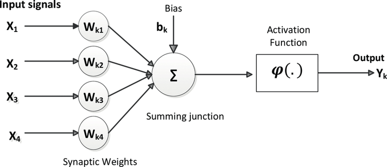

AI로 바라보는 우리의 미래
Future of AI and our life

유래없는 언택트 시대의 도래로 IT계의 수요가 늘고 있는 추세다. 그 중 빠질 수 없는 부분이 바로 AI, 인공지능일 것이다.
최근에는 자동차의 자율주행, 휴대폰 속의 인공비서(시리, 빅스비, 구글)등 점차 우리 주변을 채워나가고 있는 모습을 볼 수 있다.
AI에 대해 알려면 AI의 역사부터 알아야할 것이다. 우선 그 전에 AI의 정의에 대해 알아보려한다. AI란 Artificial Intelligence의 약자로 컴퓨터가 인간과 같이 사고하고 학습하고 판단하는 논리적인 방식을 사용하는 고급 컴퓨터를 일컫는다.
인공지능이 처음 등장하게 된 것은 1950년 컴퓨터 공학의 아버지라 불리는 앨런 튜링의 논문에 의해 등장하게 되었다. 그 논문에 제시된 한 문장, "Can machines think?(기계가 생각을 할 수 있을까?)"이 문장이 AI의 시작이었다. 이때 인공지능에 관심을 가지던 사람이 신경생리학자인 워랜 맥컬록이다. 그는 이로부터 7년전인 1943년부터 인공지능 학습용 신경망을 연구했다. 이후 1958년 코넬 대학교 프랭크 로센블랫(Frank Rosenblatt)이 연구에서 나아가 실제 테스트를 시행하게 된다. 이때 연구를 통해 알게된 PERCEPTRON(여러개의 값을 입력받아 하나의 값을 출력하는 알고리즘, 신경망의 한 층)이라는 것을 공개한다.

이후 대부분의 투자가 신경망쪽으로 가게되고 수리와 기호를 이용한 투자가 줄어들게 된다. 그러던 중 마빈 민스키(Marvin Minsky)가 퍼셉트론의 XOR문제의 허점을 증명하며 신경망 연구와 투자지원금이 회수되게되고 인공지능의 암흑기가 열리게된다.
그러던 중 다시 1980년대 다층 퍼셉트론 이론(Multi Layer Perceptron:신경망에 히든 레이어 층을 늘리면 XOR문제 뿐만 아니라 여러 복잡한 문제 해결이 가능해진다.) , 역전파법(Backpropagation)이 등장하여 신경망이 다시 인공지능의 선두에 서기 시작하는 줄 알았으나 레이어를 추가하면 할 수록 결과가 다르게 나오고 뉴런이 복잡해질 수록 역전파법또한 제대로 작동하지 않았다. 2000년대 초반 급속도로 성장한 컴퓨터의 속도, 성능과 인터넷으로 수 많은 데이터들이 쌓이게 되며 다시 인공지능 연구에 활기를 불어넣었다. 그리고 2006년 컴퓨터 과학자 지프리 힌턴(Geoffery Hinton : 역전파법 개발자)이 심층신경망(Deep Neural Network)을 발표하게 되며 인공지능은 급속도로 성장하게 된다.
딥러닝의 등장
이미지 넷이라는 웹사이트에서는 사진을 보고 사물을 구분해내는 대회를 여는데 2012년 제프린 힌턴이 이 대회에 참가하게 된다.
그가 참가하기 전까지 참가자들의 최고 성공율은 74.23%였다. 이들의 목표는 오직 75%였으나 제프린 힌턴이 딥러닝을 알렉스넷이라는 기기에 학습시킨뒤 참가하게 되는데 딥러닝이 만들어낸 성공율은 84.69%였다. 2013년에는 대부분의 이미지넷 참가자들은 딥러닝을 사용하여 참가했다. 이후 딥러닝은 인공진능, 기계학습을 잇는 카테고리의 하나로 자리를 잡게된다.
인공지능은 크개 3개로 분류할 수 있는데 약인공지능(Weak Intelligence), 강인공지능(Strong Intelligence), 초인공지능(Super Intelligence)이 있다. 약인공지능은 사람과 비슷한 수준으로 정보를 조합하고 이해하는 정도이다. 약인공지능의 예시로 알파고가 있고 자율주행자동차, 자동번역기등 현재 대부분의 인공지능이 이부분에 속한다.강인공지능은 사람과 동일하거나 그 이상의 지능을 가지는 인공지능이며 문제를 실제로 사고하고 해결할 수 있는 자아와 감정이 있는 인공지능이다. 우리가 영화에서 본 터미네이터의 스카이넷이 그 예이다.
초인공지능은 기계가 모든 면에서 인간의 능력을 초월한 단계이다. 현재의 인공지능이 강인공지능에 접어들게되면 자동적으로 초인공지능에 접어들것이라 예측하고 있다.
특이점(Singularity)은 인공지능의 발전이 가속화되어 모든 인류의 지성을 합한 것 보다 뛰어났을 때를 가리키는 말이다.
이런 상태에 놓이게 되었을 때 인간은 이미 인공지능에 열등한 존재가되고 사람들은 인간의 생물학적 한계를 극복하고자 우리가 흔히들 포스트 휴먼이라 부르는 인간으로 나아가게 될 것이다. 그러나 우리가 신체극복의 한계를 뛰어넘기 위해 트랜스 휴먼, 즉 인간의 육체가 기계로 구성된다면(뇌가 컴퓨터로 돌아가는 등) 이를 사람이라고 할 수 있을까?라는 부정적 견해 또한 존재한다. 지금도 여전히 많은 학자들이 인공지능의 기술적 특이점의 실현 가능성에 대해 찬반을 놓고 서로 다른 견해를 가지고 있다.
구글 엔지니어링 이사이며 미래학자인 레이커즈 와일이 쓴 저서 '특이점이 온다' 에서는 강인공지능이 2045년쯤 등장할 것이라 하며 동시에 인간은 점점 기계화되고 기계는 점점 인간화되어 간다는 위험성을 말하고 있다. 급속도로 성장해나가는 IT기술들의 명암은 확실하다. 인간에게 편리를 가져다주는 동시에 많은 이들이 일자리를 잃게 된다는 사실은 변함이 없다. 중등교육에 코딩교육이 필수교과로 지정되었다는 사실은 앞으로 계속 성장할 기술의 발전이 교육계에 큰 변화의 바람을 일으킬 것임을 알려준다. 마찬가지로 의료, 가정, 보안, 교육, 교통, 독서, 의류 등등 주변의 모든 것이 기계화 되는 현 시대를 살아가는 우리들의 삶에서 우리가 놓치면 안되는 것은 인간성이다. 앞으로 넘쳐나는 기술발전의 홍수속에서 살아남기 위해선 과학적 지식또한 중요하지만 인간고뇌의 산물들인 철학적요소(인문학적소양)가 기계화되는 사회에 특별함을 부여해줄 학문이 아닐까 조심스레 생각해본다.
https://www.youtube.com/watch?v=h0962biiZa4
다음 영상은 17년 1월 (왼쪽부터) 일론 머스트(Paypal, SpaceX, Tesla, SolarCity), 스튜어트 러셀(버클리대학 컴퓨터과학 교수y),
버트 셀만(코넬대학 컴퓨터과학 교수),레이 커즈와일(Ray Kurzweil, Google/미래학자), 데이비드 차멜스(호주 국립대 철학자), 닉 모스트롬(옥스퍼드 대학 철학자), 에미스 하사비스((Demis Hassabis, 구글 DeepMind/딥마인드), 샘 해리스(신경학자), 잔 탈린( Skype, Kazaa and MetaMed Research) 등 총 9명의 인사들이 모여 Superintelligence : Science or Fiction?이라는 주제로 토론을 하는 영상이다. 초인공지능의 실현 가능성에 대한 저명한 학자 및 기업가들의 의견을 들을 수 있다.